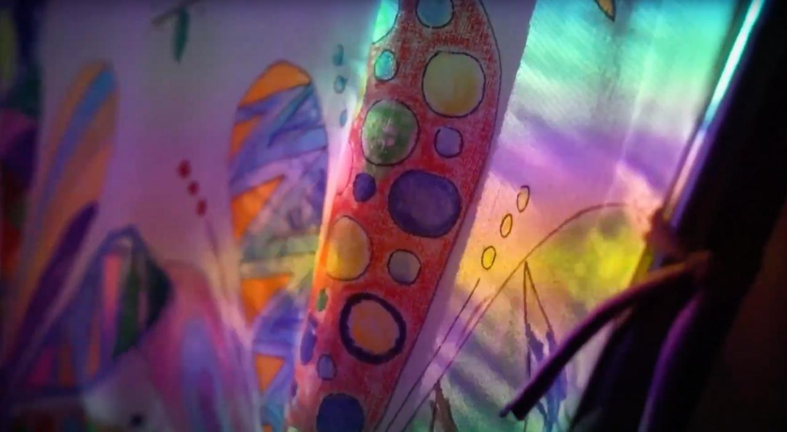
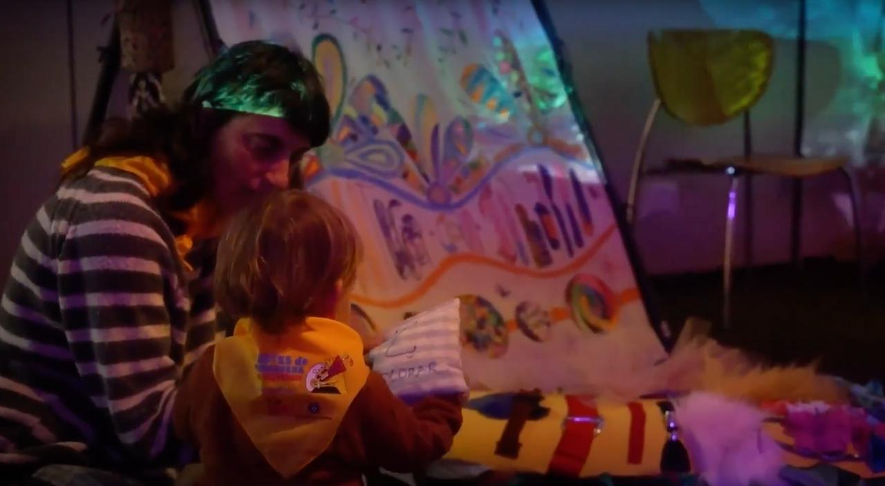
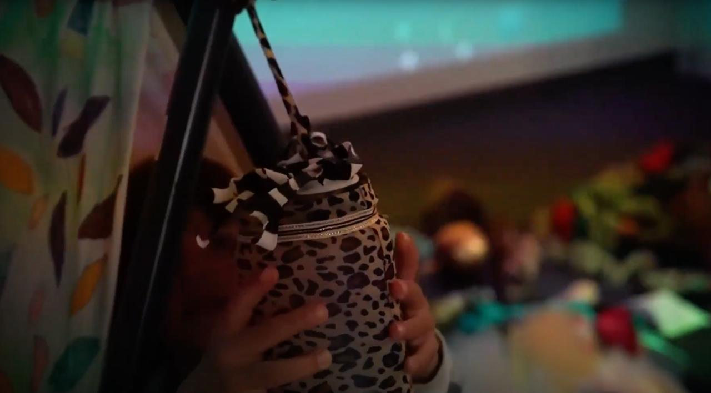

Ajuntament de L’Hospitalet
An interactive sensory installation created for the City Council of L'Hospitalet.



2025, 2026
Video projection, original sound, marine textiles
Centre Cultural de Santa Eulàlia
15 minutes (loop)